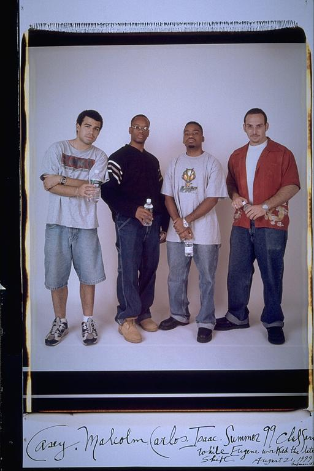

Pals: Boys Who Grew Up Together
elsadorfman.com/pals
Eugene: Carlos Finally Takes My Spot:
Carlos is a perfect example of how two components of my life became one. I
used to hang out in Roxbury and then commute to Cambridge. I had two
separate groups of friends. Somewhere around high school I introduced both
groups and everybody started hanging out. That was a big plus for me...
Until........ I started hearing reports that my friends would hook up and
chill without me... I was like WHOA..... what about me.... I was there for
this picture but Carlos was so cunning and diabolical that he somehow
tricked me into taking my spot.... I'll get you Losito... " I am the Last
Dragon...," "What if you had wings, you, that would be ill."
Aldo: The last summer of the millennium. See that, just throw in a word like "millennium" and an ordinary sentence becomes one worth reading about. But it was the end of the nineties. When I speak about my time of hanging out with these guys, it will be of the nineties. My adventurousness was all in the nineties. My last true time to hang out, pretty much carefree was in the nineties.

elsad@comcast.net